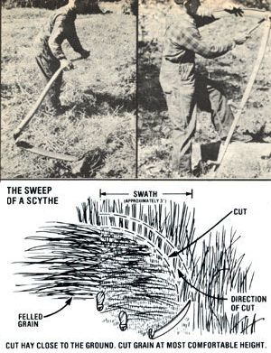

What have you got when you need to cut a small field of hay . . . weed a hard-to-get-at field. . . or harvest a homestead grain crop?
Up until about a century ago, virtually every small-scale farmer knew how to handle a scythe. The hook-bladed implements were used for cutting fields of hay, grain, and weeds. But when the horsedrawn mowing machine-and, later, the petroleum-powered harvester-became popular, scythe usage dropped off sharply. In fact, today, many folks consider the cutting method to be little more than a "quaint folk art".
But hold your horses (and tractors) . . . because the scythe is beginning to make a comeback, and with good reason, too! More and more small-farm-holding folks are discovering that the centuries-old implement is the perfect tool for many homestead tasks. After all, a person wielding one of the muscle-powered mowers can harvest an acre of hay or grain a day (more, if he or she is skilled) . . . cut weeds in small orchard plots and along fencerows . . . or even-if the user is really adeptmow the front lawn!
Scythes are first-class cutters, butmake no mistake-there's a knack and a good bit of hard work involved in using them. I know . . . because I'm 74 years young, and I've been around the implements since I was a boy.
Back in those days, the first morning task, come haying time, was to sharpen up the family scythe. Being a stout lad, I was usually chosen to turn the handle of our grindstone while my dad honed his blade to just the right thickness and angle. The tool had to be precisely sharpened-indeed, some special-purpose thin grass scythes are honed until you can deflect the blade with a thumbnail!-so this task always seemed to me to take hours (actually, the job probably lasted little more than 15 minutes).
Dad would carefully run the blade up and down on the grindstone, working on the underside of the tool to produce an upwardcutting edge, and using an overthe-wheel drip bucket to keep the metal cool. The scythe was considered ready when the edge could cut, effortlessly, through a wheat straw.
After my father gave the blade its final touches with a whetstone, we headed off to the fields for the day's work. Dad would start down in the left-hand corner of a plot, adjust the two grips ( these "nibs" can be set to whatever positions the mower desires) so that he could stand upright while his blade hovered just off the ground, and-keeping his feet close togetherturn his entire torso back to the right. He would then swing the tool around and across his body . . . so that the blade sliced (not chopped!) a thin swath. After that, he'd arc the tool back, step forward about half a foot, and slice again. Each quarter-circle so cut would be about a yard across and only six to eight inches deep.
My father would work for about 15 minutes at a stretch ( which was just long enough to cut a row in our small field). At that point, he'd stop, pull his whetstone out of its water-filled sheath, and retouch the blade. This regularly performed task served two purposes: It kept a fine cutting edge on the scythe, and it gave Dad a chance to rest. (As I said, scything is hard work.)
Although my father used only a standard haying blade on his scythe, I later learned that the tools' curved handles (or "maths" as they're properly called) can be fitted with sturdier bush blades for cleaning brush or briars, and with thin imported grass blades for fine mowing work. In addition, a grain cradle can be attached to a snath, to catch the sliced stalks and make them easier to bundle than they would be on the ground.
I didn't get to do much work with a scythe myself until I got a job as a Montana ranch hand many years later. There I used the tool to trim areas that a mechanical mower couldn't reach. I found out-while doing so-that it does take a while before a person can develop good mowing and blade-sharpening ability. But I worked hard at learning the skills . . .just as so many younger people are doing today. And you know, it does my old heart good to realize that there's a growing number of folks who are concerned enough about the future to want to watch over small plots of land . . . and that a tool from my childhood days can still play a useful part in such people's lives!
EDITOR'S NOTE: Here are several sources for scythes.[1] By Hand & Foot, Ltd., Dept. TMEN, P.O. Box 611, Brattle-boro, Vermont 05301. Ask for the cornpany's free and informative brochure on scythes. (You can also order a manual, The Scythe Book, for $6.95 postpaid.) [2] Countryside General Store, Dept. TMEN, 103 North Monroe, Waterloo. Wisconsin 53594 (catalog $1.00). [3] Cum berland General Store, Deft. TMEN, Rt. ,S, Crossville, Tennessee 38555 (catalog $3.75). [4] Smith & Hawkers Co., Dept. TMEN, 68 Homer, Palo Alto, California 94301 (catalog free).
|
 |
|
|